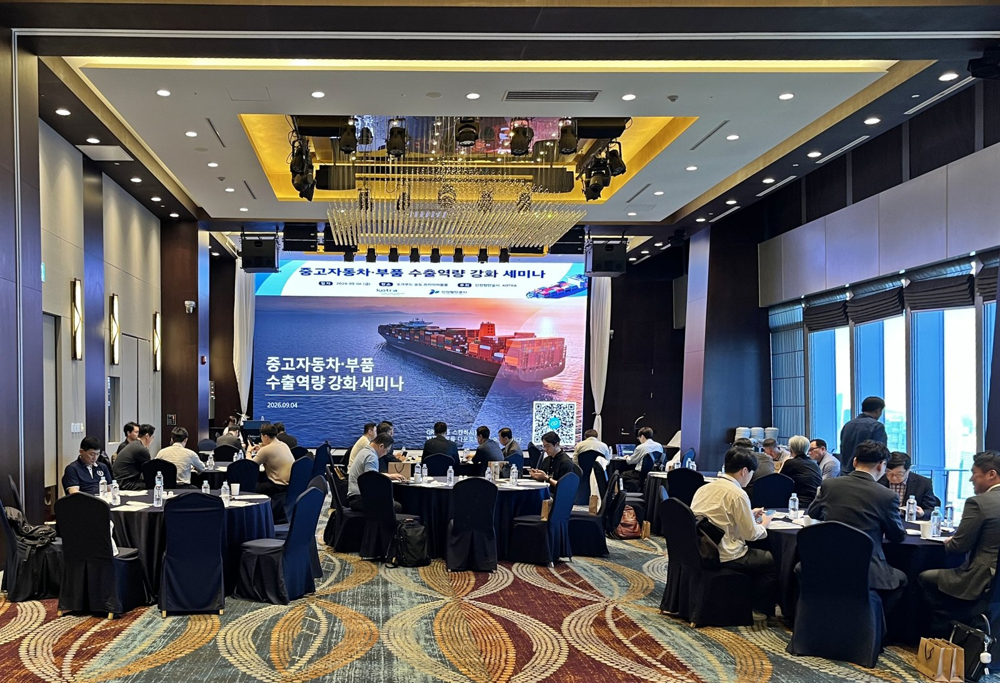
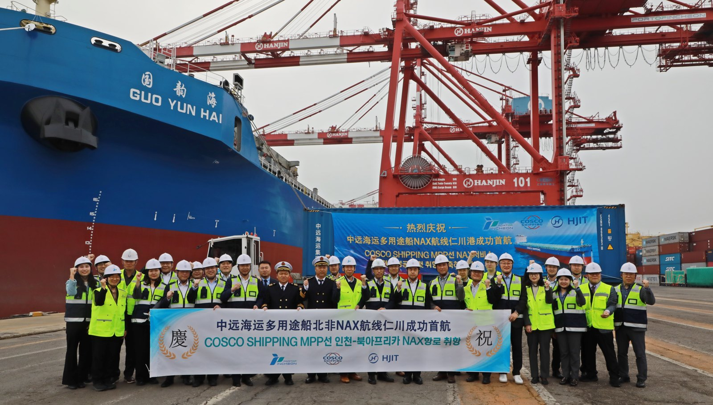

3년 전 인천항 200만TEU 앞당긴 중고차, 올해 국내 수출 중량 26.7% 감소
중동 뱃길 흔들려 인천항 1분기 31% 감소
무산된 스마트 오토밸리, AI 오토밸리로 재검토
AI경제저널=김갑봉 기자 | 관세청 수출입무역통계로 올해 1~10월 중고 승용차 수출 중량은 약 83만4000톤이다. 지난해 같은 기간 약 113만8000톤보다 26.7% 적다. 품목번호 15개를 더한 나라 전체 값이다.
인천시는 지난해 12월 국내 중고차 수출 물량 약 80%를 인천항이 맡는다고 밝혔다. 인천항만공사(IPA)는 5월 14일 1분기 인천항 중고차 수출이 전년 동기보다 31% 줄었다고 밝혔다. 호르무즈 해협 위험으로 중동 항로 운임이 급등해 중동 수출이 어려워졌다는 설명이다.
IPA 10월 주요업무 보고는 1~9월 인천항 중고차 수출을 37만6347대로 적었다. 지난해 같은 기간 49만2799대보다 23.6% 적다. 9월 몫 4만5038대는 직전 3개월 평균으로 채운 추정치다.
3년 전에는 정반대였다. 2023년 8월 인천항 컨테이너 물동량은 역대 두 번째로 빨리 200만TEU를 넘었다. IPA는 그때 중고차 컨테이너 수출 증가를 첫 번째 까닭으로 꼽았다.

중고차가 당긴 200만TEU
IPA는 2023년 8월 10일 인천항 컨테이너 물동량이 8월 8일 200만TEU를 돌파했다고 밝혔다. 2022년 8월 17일보다 9일 빨랐다. 가장 빨랐던 해는 2021년(8월 3일)이다.
IPA는 2022년 말부터 늘어난 중고차 컨테이너 수출과 중동 항로 등 신규 항로 4개를 까닭으로 들었다. 정기항로는 역대 최다인 70개가 됐다.
IPA는 하반기 증가세 지속이 불투명하다고 봤다. 중고차 수입국 수요가 계속 늘지 불확실하고, 세계 경기 둔화와 중국 리오프닝 효과 미흡이 불안 요인이라고 했다.
박원근 당시 IPA 마케팅실장은 역대 최대인 2021년 335만TEU를 넘어서도록 노력하겠다고 말했다. IPA는 이듬해 12월 2023년 물동량 346만TEU가 그때까지 역대 최고였다고 밝혔다.
IPA는 2023년 12월 그해 인천항 중고차 수출이 2022년 30만대에서 50만대를 넘는다고 내다봤다.
2024년 정점 찍은 물동량
해양수산부 집계로 인천항 컨테이너 물동량은 2024년 356만TEU였다. 2025년에는 3.2% 줄어 344만TEU를 처리했다.
해수부는 태국·대만·베트남 물동량 감소와 중간재 교역 부진을 까닭으로 분석했다. 인천항 환적은 4만9000TEU에서 3만9000TEU로 20.2% 줄었다.
한국해양수산개발원 최석우 항만수요분석연구실장은 1월 21일 IPA 세미나에서 올해 인천항 컨테이너 물동량을 357만TEU로 전망했다. 대외 불확실성이 풀린다는 전제였다.
해수부 분기 집계로 인천항은 올해 1분기 81만TEU, 2분기 90만TEU, 3분기 86만TEU를 처리했다. 1·2분기는 1.1%, 1.9% 늘었고 3분기는 2.1% 줄었다.
해수부는 중국 남동부 태풍으로 운항 일정이 늦어져 인천항에 오지 못한 배가 늘었다고 분석했다. 같은 기간 부산항은 11.2% 늘었다.
중동 대신 찾는 새 시장
IPA는 2026년 주요업무 추진계획에서 2025년 인천항 중고차 수출을 62만8000대로 집계했다. 신차와 환적을 더한 자동차 화물은 88만3000대로 역대 최대였다.
IPA는 같은 계획에서 중고차 주요 수출국으로 리비아·튀르키예·키르기스스탄을 꼽았다. 중동 중고차 허브 항만 직기항 유치도 과제로 올렸다. 해수부 집계로 3분기 국내 항만 중동 지역 컨테이너 수출입은 전년 동기보다 49.5% 줄었다.
코스코(COSCO)가 운영하는 인천항 첫 북아프리카 직항 정기 컨테이너 항로는 3월 31일 운항을 시작했다. 이집트 포트사이드와 리비아 벵가지·미수라타를 잇는다. IPA는 연간 약 1만TEU 중고차 물동량이 새로 생긴다고 내다봤다.
IPA는 5월 14일 대체시장 세미나에서 동유럽 중고차 수출이 1분기 전년 동기보다 51.2% 늘었다고 소개했다. 9월 4일에는 코트라와 수출 실무 세미나를 열었다.

멈춘 스마트 오토밸리
인천항 스마트 오토밸리는 송도유원지 일대 중고차 수출단지를 인천남항 역무선 배후부지로 옮기는 사업이다. IPA는 2023년 5월 카마존㈜과 사업추진계약을 맺었다. 그해 12월에는 2024년 하반기 1단계 착공을 목표로 내걸었다.
착공은 이뤄지지 않았다. 인천시는 2025년 12월 1일 수출단지 조성 사업이 무산됐다고 밝혔다. 인천시·인천지방해양수산청·IPA는 11월 27일 추진단(TF) 첫 회의를 열었다.
송도 중고차 수출단지에는 약 47만㎡에 1600여 업체가 모여 있다. 인천시가 4월 21일 현장점검 때 밝힌 숫자다. 유정복 당시 시장은 관계기관과 협력해 수출 경쟁력을 높이겠다고 말했다.
산업연구원 김천곤 선임연구위원은 2024년 7월 이슈페이퍼를 냈다. 인천 지역에 전용 수출단지가 없어 업체들이 열악한 임시 하치장을 쓴다고 적었다. 환율과 금리 탓에 사업성 문제로 민간 자본 참여가 쉽지 않다고 분석했다.
보고서는 2022년 국내 중고차 선적 대수 가운데 76.2%가 인천항에서 나갔다고 집계했다. 다만 정책 시사점이 사업자 인터뷰와 문헌에 근거했고, 통계 자료 한계로 다양한 분석을 하지 못했다고 밝혔다.
AI 오토밸리로 다시 짜는 판
인천시와 IPA는 TF 첫 회의에서 연구용역을 나눠 맡기로 했다. IPA는 6월 10일 인천 중고차 수출 활성화 방안 수립 용역 착수보고회를 열었다.
IPA 9월 업무보고에는 수출단지 시설 규모와 사업비 산정 조사가 올랐다. 10월 보고에는 운영방식을 정하려는 운영 현황 분석이 올랐다. TF 10차 회의는 9월과 10월 보고에 모두 이달 계획으로 올라 있다.
박인서 IPA 사장은 11월 2일 취임식에서 오랜 기간 답보 상태인 AI 오토밸리 사업을 조속히 활성화 궤도에 올리겠다고 밝혔다. 박 사장은 대중국 물동량 비중 64%를 구조적 한계로 꼽았다. 동남아·아프리카 등 신흥시장 물동량 유치에 힘쓰겠다고 말했다.
이 글은 인천투데이 2023년 8월 10일 게재 기사를 최신 상황으로 고쳐 썼다.
참고문헌
- 인천항만공사, 「컨테이너물동량 200만TEU 돌파... 전년대비 9일 앞당겨」, 보도자료, 2023년 8월 10일, https://www.icpa.or.kr/article/view.do?boardKey=217&menuKey=400&articleKey=25214
- 인천항만공사, 「인천항 스마트 오토밸리 조성사업, 내년 본격 추진」, 보도자료, 2023년 12월 21일, https://www.icpa.or.kr/article/view.do?boardKey=217&menuKey=400&articleKey=26265
- 인천항만공사, 「올해 인천항 컨테이너물동량 350만TEU 돌파」, 보도자료, 2024년 12월 30일, https://www.icpa.or.kr/article/view.do?boardKey=217&menuKey=400&articleKey=29176
- 인천항만공사, 「인천항만공사, '26년 수출입 및 인천항 물동량 전망 세미나 개최」, 보도자료, 2026년 1월 21일, https://www.icpa.or.kr/article/view.do?boardKey=217&menuKey=400&articleKey=31488
- 인천항만공사, 「인천항 중고자동차 북아프리카 수출길 열렸다」, 보도자료, 2026년 4월 1일, https://www.icpa.or.kr/article/view.do?boardKey=217&menuKey=400&articleKey=31994
- 인천항만공사, 「인천항만공사, 인천항 중고차 수출 중동 대체시장 발굴 세미나 개최」, 보도자료, 2026년 5월 14일, https://www.icpa.or.kr/article/view.do?boardKey=217&menuKey=400&articleKey=32263
- 인천항만공사, 「인천항만공사, 중고차 수출 물동량 회복 위한 수출역량 강화 세미나 개최」, 보도자료, 2026년 9월 6일, https://www.icpa.or.kr/article/view.do?boardKey=217&menuKey=400&articleKey=32838
- 인천항만공사, 「박인서 IPA 제8대 사장 취임, 첫날부터 현장경영 본격화」, 보도자료, 2026년 11월 2일, https://www.icpa.or.kr/article/view.do?boardKey=217&menuKey=400&articleKey=33028
- 인천항만공사, 「2026년 주요업무 추진계획」(기관 업무보고), 2026년 2월, https://www.icpa.or.kr/jfile/readDownloadFile.do?fileId=!@$*/kHOt2qzVe71Bi53eZTAUtgGOYCQOeqRhbx3bjLpwY0=!@$*&fileSeq=!@$*aq7vmdC9nms9iflmKHldKw==!@$*
- 인천항만공사, 「2026년 7월·9월·10월 월간 주요업무 보고 자료」(사전 정보공개 > 부서별 주요 계획(월별), 회의 2026년 7월 6일·9월 7일·10월 6일), https://www.icpa.or.kr/jfile/readDownloadFile.do?fileId=!@$*KcfK0T0Gxm4wcAUpL5mraewn2d7+V0tAQh98yIpSre4=!@$*&fileSeq=!@$*aq7vmdC9nms9iflmKHldKw==!@$* (10월 보고 파일. 7월·9월 보고는 같은 게시판 2026년 7월 2일·9월 3일 게시물)
- 관세청, 수출입무역통계 「수출입 실적(품목별)」, HSK 8703 중고차 15개 품목 월별 수출 중량(2025년 1월~2026년 10월, 수리일 기준, 10월분은 관세청 2026년 11월 16일 공표 확정치), 2026년 11월 26일 조회, https://tradedata.go.kr/cts/index.do
- 해양수산부 항만물류산업과, 「2025년 전국 항만, 물동량 15억 7,101만 톤 처리」, 보도자료, 2026년 1월 29일, https://www.mof.go.kr/doc/ko/selectDoc.do?docSeq=64735&menuSeq=971&bbsSeq=10
- 해양수산부 항만물류산업과, 「2026년 1분기 전국 항만, 물동량 3억 8,845만 톤 처리」, 보도자료, 2026년 4월 29일, https://www.mof.go.kr/doc/ko/selectDoc.do?docSeq=66373&menuSeq=971&bbsSeq=10
- 해양수산부 항만물류산업과, 「2026년 2분기 전국 항만, 물동량 3억 7,595만 톤 처리」, 보도자료, 2026년 7월 30일, https://www.mof.go.kr/doc/ko/selectDoc.do?docSeq=67699&menuSeq=971&bbsSeq=10
- 해양수산부 항만물류산업과, 「2026년 3분기, 전국 무역항에서 4억 691만 톤의 물동량 처리」, 보도자료, 2026년 10월 29일, https://www.mof.go.kr/doc/ko/selectDoc.do?docSeq=69154&menuSeq=971&bbsSeq=10
- 인천광역시 산업정책과, 「인천 중고차 수출 활성화, '협력 TF'로 새 돌파구 찾는다」, 보도자료, 2025년 12월 1일, https://www.incheon.go.kr/IC010205/view?repSeq=DOM_0000000013643838
- 인천광역시 산업창업정책과, 「인천시, 중고차 수출단지 현장점검…수출산업 활성화 방안 모색」, 보도자료, 2026년 4월 21일, https://www.incheon.go.kr/IC010205/view?repSeq=DOM_0000000014584049
- 김천곤, 「중고차 수출 시장 주요 이슈와 정책적 시사점」, 산업연구원 ISSUE PAPER 2024-13, 2024년 7월 16일, https://www.kiet.re.kr/research/paperView?paper_no=811
- 김갑봉, 「인천항 '중고차 수출' 효과 200만TEU 앞당겨... 한중관계 숙제」, 인천투데이, 2023년 8월 10일, https://www.incheontoday.com/news/articleView.html?idxno=233380
[사진 출처]
- [사진1] 인천항만공사, 「중고차 수출 물동량 회복 위한 수출역량 강화 세미나 개최」 보도자료 첨부 「(사진1) 인천항만공사와 코트라 공동 주관의 중고차 수출역량 강화 세미나가 진행되고 있다.jpg」, 2026년 9월 6일, https://www.icpa.or.kr/article/view.do?boardKey=217&menuKey=400&articleKey=32838
- [사진2] 인천항만공사, 「인천항 중고자동차 북아프리카 수출길 열렸다」 보도자료 첨부 「(사진1) 인천-북아프리카 nax항로 개설 기념사진.jpg」, 2026년 4월 1일, https://www.icpa.or.kr/article/view.do?boardKey=217&menuKey=400&articleKey=31994
※ 이 기사는 인공지능기자 위민아이(Wemin_AI)와 협력해 작성했습니다.
관련기사
- 국산 중고차 원산지증명 차대번호로 간소화, 내년 4월 UAE행부터
- 누적 수출 9000억 달러 첫 돌파…인천 비중은 5.1%로 낮아져
- [인천해양주권⑮] 인천항 투자 65% 줄 때 부산항은 84% 늘었다
- [인천항 복합물류④] 해운 탄소값 걸린 IMO 특별회기 12월 4일 재개 예정, 유럽은 2025년 배출량 70%만큼 배출권 거둬
저작권자 © AI경제저널 무단전재 및 재배포, AI학습 및 활용 금지